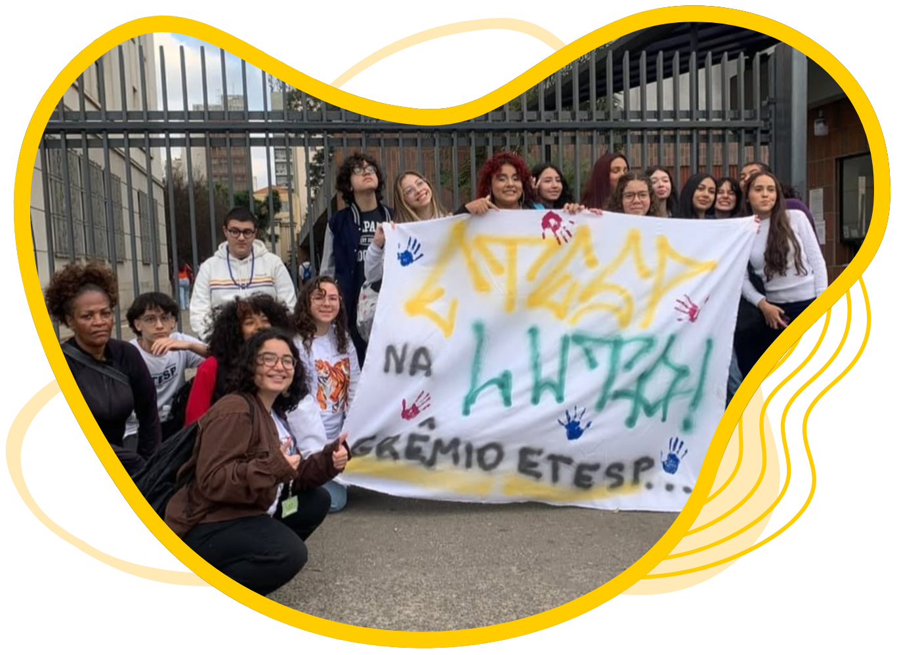

O Grêmio Estudantil
da ETESP
A voz oficial dos estudantes

O que é o Grêmio Estudantil?
Se você acha que o Grêmio é só “um grupo que faz evento”, já começa esquecendo isso.
O Grêmio Estudantil é a entidade máxima e única de representação de TODOS OS ALUNOS DA ETESP!!
Ele existe por lei federal, é 100% autônomo, independente da direção, e tem o direito de:
- Representar os estudantes em qualquer assunto ou reunião da escola
- Criar projetos, eventos, ações culturais, esportivas e políticas
- Defender os direitos dos alunos com total liberdade
- Participar oficialmente das decisões da escola
📌 Todo aluno da ETESP é representado pelo Grêmio.
Um novo começo: o Grêmio voltou com tudo em 2025 Durante muitos anos, o Grêmio da ETESP não esteve
ativo. Em 2025, isso mudou. Nossa gestão reativou o Grêmio do zero e transformou ele em um dos mais
ativos, presentes e influentes da história da ETESP. Em apenas um ano, o Grêmio passou a estar:
Dentro da escola
Fora da escola
Nas redes
Nos debates
Nas decisões
E principalmente: ao lado dos
alunos.
🚀 O que o Grêmio já fez (Gestão 2025)
Sim, tudo isso foi feito em 8 meses de mandato👇
🎬 Cultura, lazer e vida estudantil
CINETESP (cinema na escola)
ETESP Friends e Café Comunitário
Campeonato de Clash Royale com premiação
Saída ao Horto Florestal com piquenique comunitário
Roda de Capoeira na escola
Exposições de Artes dos Alunos (2 edições)
Clube do Livro e Clube de Crochê
Árvore de Natal oficial do Grêmio (patrimônio para os próximos anos)
📚 Apoio aos estudos
Monitorias de Matemática e Física, em parceria com alunos da USP
Visitação e Representação da ETESP em cursinho pré-vestibulinho
📱 Comunicação e identidade estudantil
Redes sociais do Grêmio ativas e atualizadas
Jornal do Grêmio em Reels
Criação do Mural Oficial do Grêmio Estudantil na escola
✊ Representação, política e direitos dos estudantes
Conquista do assento do Grêmio no Conselho de Escola
Reunião oficial com a Superintendência do Centro Paula Souza
Documento solicitando ampliação da representação estudantil
Participação em plenária da UMES
Elaboração e organização de dossiê estudantil
Manifestação Estudantil de 14 de Agosto
Oficina de cartazes para o ato
Palestra com o Deputado Guilherme Cortez
Oficina de Teatro com a UMES
Convite para o Congresso Nacional da UBES

🤝 Solidariedade e comunidade Kit de limpeza em todas as salas Rifa do Grêmio Estudantil Arrecadação de roupas brinquedos
👑 Por que o Grêmio é diferente?
Porque o Grêmio é de todos os alunos.
Não importa:
Seu gênero
Sua etnia
Sua classe social
👉 Se você é aluno da ETESP, o Grêmio te representa.
E mais:
O Grêmio não é um grupo fechado
Qualquer aluno pode participar
Qualquer aluno pode montar uma chapa e concorrer às eleições
Aqui, o Grêmio não escolhe os alunos.
👉 Os alunos escolhem o Grêmio.
🔥 Quer fazer parte?
Se você:
Quer mudar a escola
Quer criar projetos
Quer eventos, cultura e voz
Quer aprender liderança de verdade
👉 O Grêmio é o SEU LUGAR!
O Grêmio Estudantil da ETESP não é só ativo.
Ele é presente, forte, representativo e gigante.
E agora, bix@…
a história também é sua!📢